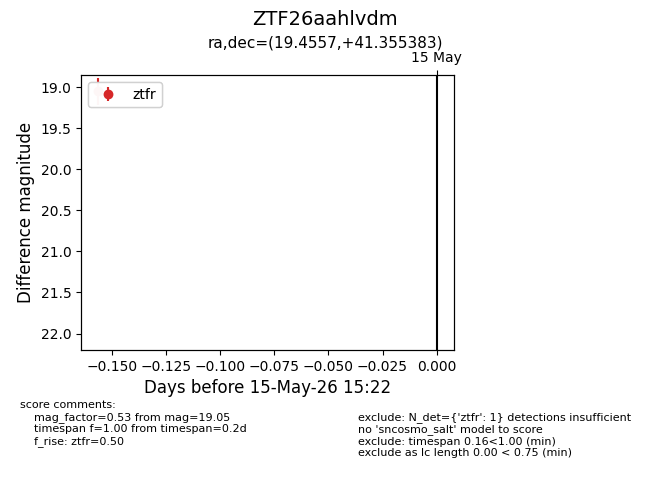
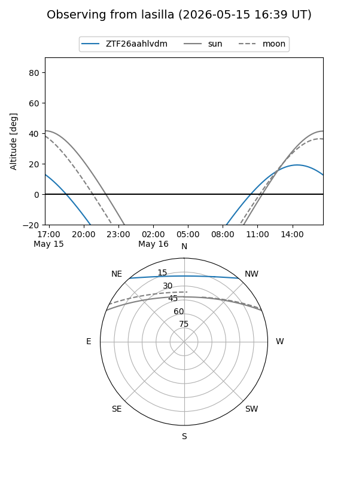
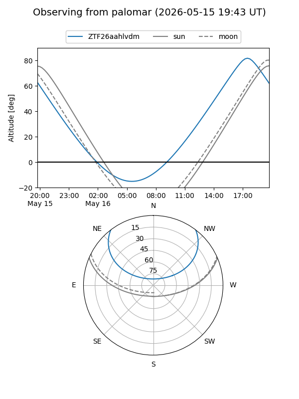

ZTF26aahlvdm
Target ZTF26aahlvdm at 2026-05-15 15:24
Aliases and brokers:
FINK: link
Lasair: link
ALeRCE: link
alt names
ZTF26aahlvdm (ztf,fink_ztf)
Coordinates:
equatorial (ra, dec) = 19.4557,+41.35538
equatorial (HMS+DMS) = 01:17:49.37,+41:21:19.38
galactic (l, b) = (128.2401,-21.24426)
Flags:
Photometry:
last ztfr=19.05
1 ztfr detections
Lightcurve

Visibility


Additional plots